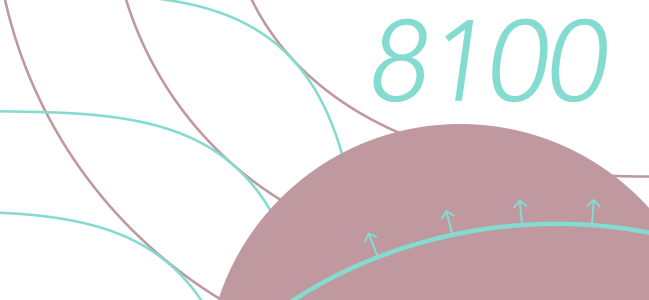

Class Notes (Updated: 12/9/2021)
This is the course website for Vanderbilt Economics 8100. This is the first course of the PhD microeconomics core sequence. The course will cover the fundamentals of consumer theory, theory of the firm, and simple markets in partial equilibrium. This page will be continuously updated throughout the semester. Please check it on a regular basis. Consider subscribing to changes using a service such as Visual Ping or Wachete.
Main textbook: *Advanced Microeconomic Theory*, Geoffrey Jehle and Philip Reny. Secondary textbook: *Microeconomic Theory*, Andreu Mas-Colell, Michael D. Whinston, Jerry R. Green.
There will be an assignment roughly each week. Problems will be added to the schedule about two weeks before the assignment is due. You must type your homework. This is the perfect time for you to learn to type in \(\LaTeX\). There are many online resources for learning \(\LaTeX\). One particularly easy way to get started with \(\LaTeX\) is through the very user-friendly editor called Lyx. There will be a learning curve at first. Embrace it. This is an investment.
9:35-10:50 in Calhoun 413B.
There will be one midterms and a final exam. They are tentatively placed in the schedule below. Grading will be based 30% on midterm exam, 50% on the final exam, and 20% on homework.
My office hours: Thursday 11-12pm in Calhoun 404. TA: Kayleigh McCrary. Kayleigh's Office Hours: Wednesdays from 2:30-3:30 PM in Calhoun 209.
Choice. 1.1 Primitive Notions. 1.2 Preferences and Utility. Please Review: A1.4 Real Value Functions. Additional Reading: Rubinstein Lecture Notes Chapter 1.
1.3 The Consumer Problem. Please Review: A2.1 Calculus. A2.2 Optimization.
1.4 Indirect Utility and Expenditure. A2.3 Constrained Optimization. A2.4 Value Functions. Homogeneous Functions Notes Convexity Notes Theorem of the Maximum and Envelope
1.5 Properties of Consumer Demand.
1.5 Properties of Consumer Demand.
2.4 Uncertainty.
2.4 Uncertainty
Covers Chapter 1
2.4 Uncertainty
3.3 Cost. 3.4 Duality in Production. Lecture Notes on Separable Preferences Ted Bergstrom
3.4 Duality in Production. 3.5 The Competitive Firm.
4.1 Perfet Competition 4.2 Imperfect Competition.
4.3 Cournot and Friends.
5.1-4 General Equilibrium
Mechanism Design (See Lecture Notes)
Covers material through General Equilibrium.
Other Stuff
Old Exams
Helpful Tips I wrote these with my classmate Zach Bethune when I was a student. They have come in handy for me many times. If you find an error, or have a suggestion about something to add, let me know. Helpful Tips